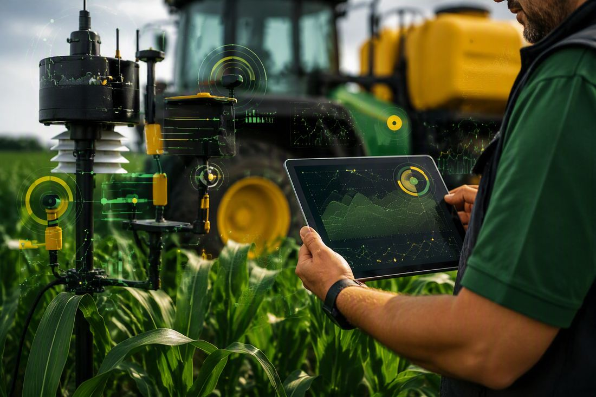

Decida antes de plantar.
Uma IA que cruza solo, clima, safra e finanças e entrega ao produtor rural uma recomendação quando ainda dá tempo de ajustar.
Os dados existem. Só não conversam.
Um site para o clima, um laudo para o solo, uma planilha para os custos e o histórico na memória.
Um só lugar. Uma resposta.
- Qual cultura
- Em qual janela
- Com qual margem
- Com quais riscos
O nome vem da égide, o escudo da mitologia grega.
Feito para quem decide no campo.
O produtor acessa pelo celular. Agrônomos validam. A gestão aprova o escopo.
A terra aguenta essa cultura?
O AEGIS compara o perfil do solo com o que cada cultura exige e aponta a correção. SoilGrids e Embrapa.
O clima vai ajudar?
Histórico e previsão definem a melhor janela de plantio. INMET, Agritempo, CPTEC e NASA POWER.
O alerta chega antes da perda.
O NDVI mede o vigor da lavoura por satélite. Um desvio vira aviso. Copernicus e Sentinel Hub.
Quanto essa área pode render?
Uma produtividade realista, entre o melhor ano do produtor e a média nacional. Histórico próprio e CONAB.
E a conta fecha?
Custo, receita, margem e ponto de equilíbrio em três cenários.
Duas frentes. Uma alimenta a outra.
A produtividade estimada pelo agronômico é a principal entrada do financeiro.
Sete módulos. Um contrato de dados.
Seis formam o Scrum 1. O sétimo é o Scrum 2. Tudo em Python. Na ordem: Ingestão, Cadastro, Histórico, Motor, Rotação, Agendador e Financeiro.
Quatro mensagens ligam tudo.
O gatilho: o talhão sai da colheita e entra em recuperação.
Cinco camadas, como o próprio solo.
Cada uma com uma responsabilidade. Dá para testar e evoluir por partes.
Começa simples. Cresce com dados reais.
- V1Regras e heurísticasComeçar aqui
- V2Regressão estatísticaEvolução
- V3Modelos robustosEscala
Toda recomendação vem com justificativa e grau de confiança.
Tudo chega em uma tela.
- Entender
- Comparar
- Decidir
Esboço da estrutura, sem dados reais.
Recomendação agronômica
Comparativo financeiro
Prevenção de riscos
Nove sprints até a integração.
- Clima e histórico
- Solo, satélite e cadastro
- Histórico e início do motor
- Motor completo
- Rotação
- Agendador e contrato
- Custos
- Receita e viabilidade
- Relatório e integração
Só roda em nuvem aprovada.
Por ser um projeto dentro da John Deere, toda tecnologia segue as políticas internas.
Cinco riscos já no radar.
Cada um com um tratamento previsto.
Três decisões levantam o escudo.
Ligue cada uma conforme for aprovada na reunião.
"Cada decisão de hoje cultiva os resultados de amanhã."
AEGIS Field IntelligenceAutor: Theo TeixeiraVersão 1.0, outubro de 2026Status: concepção e arquitetura
Visão geral, problema e público
O AEGIS é uma inteligência artificial de previsões agropecuárias e financeiras. O objetivo é apoiar o produtor rural a decidir melhor antes do plantio, quando as escolhas ainda podem ser ajustadas e o custo de errar é menor.
Os quatro pilares
- Solo
- A terra tem as condições que a cultura exige? Precisa de correção?
- Clima
- O clima previsto favorece a cultura e a janela de plantio?
- Safra
- O que o histórico próprio e o mercado indicam sobre a produtividade esperada?
- Financeiro
- A decisão agronômica também faz sentido economicamente?
O problema
Hoje, o que plantar, quando plantar e se vale a pena financeiramente costuma depender da experiência do produtor e de informações espalhadas em fontes diferentes.
- FragmentaçãoOs dados existem, mas não conversam entre si.
- Decisão reativaEstresse hídrico e margem baixa costumam ser percebidos quando já afetaram o resultado.
- Agronomia longe das finançasA melhor cultura para a terra nem sempre é a mais rentável, e essa comparação raramente é feita de forma estruturada.
A proposta
Reunir dados agronômicos, climáticos e financeiros em um só lugar e transformá-los em uma recomendação clara, comparável e que leva a uma ação concreta: qual cultura, em qual janela, com qual produtividade e margem esperadas, e quais riscos merecem atenção.
Para quem
- Produtor ruralUsuário final. Vai acessar o AEGIS pelo celular.
- Agrônomos e consultoresUsuários de apoio. Validam e acompanham as recomendações.
- GestãoPatrocinadores internos. Aprovam o escopo e acompanham a evolução do projeto.
Origem do nome
Égide (aegis, em grego e latim) é o escudo da mitologia grega. A ideia é proteger o produtor contra riscos e contra decisões tomadas sem dados.
As duas frentes e a integração entre elas
Duas frentes Scrum se completam. Uma responde "o que é melhor plantar?". A outra responde "isso vale a pena financeiramente?".
| Scrum 1: inteligência agronômica | Scrum 2: inteligência financeira | |
|---|---|---|
| Papel | Técnico agrônomo. Analisa solo, clima, insumos e histórico de safras, estima produtividade, recomenda rotação de culturas e coordena o calendário dos talhões. | Financeiro. Recebe o pacote agronômico e calcula custos, receita projetada, cenários de preço, margem, ponto de equilíbrio e sinalização de risco. |
| Foco | Viabilidade técnica da cultura | Viabilidade econômica da decisão |
| Entradas | Solo, clima, insumos, histórico da área, NDVI | Custos de insumos e operação, preços, produtividade estimada pelo Scrum 1 |
| Processamento | Compara condições da área com as exigências das culturas | Calcula custos, receita projetada, margem e cenários |
| Saídas | Cultura recomendada, alternativas, janela de plantio, produtividade estimada, rotação e cronograma de campo | Custo total, receita, margem, ponto de equilíbrio e cenários otimista, base e pessimista |
Quatro mensagens conectam os dois Scrums
O gatilho acontece quando o talhão sai da colheita e entra em recuperação.
- Agendador para Rotação: pede recomendação. Talhão, cultura anterior, colheita, próxima janela e localização.
- Produtor ou sensor para Rotação: envia análise do solo. Data, resultado da safra, N, P, K, matéria orgânica e pH.
- Rotação para Agendador: retorna recomendação. Cultura, alternativas, recuperação, justificativa e confiança.
- Rotação para Scrum 2: alimenta o financeiro. Cultura, produtividade, custo agronômico e janela temporal.
Fontes de dados
O AEGIS usa fontes públicas e reconhecidas, além do histórico do próprio produtor. Cada fonte alimenta uma parte específica da análise.

Clima
É o fator que mais influencia a decisão de plantio. Quase toda cultura tem faixas ideais de temperatura e de água, e uma janela mal escolhida pode comprometer a safra inteira.
- Origem
- INMET, Agritempo, CPTEC e NASA POWER
- Principais dados
- Temperatura, chuva, umidade, vento, radiação solar e previsões climáticas
- Objetivo
- Avaliar se uma cultura tem condições adequadas para plantio e produtividade
- Fluxo
- Coletar dados climáticos, analisar a condição da região, apoiar a recomendação de cultura
- Na prática
- Combina o histórico da região com as previsões da próxima temporada, verifica se a cultura terá o que precisa durante o ciclo e ajuda a definir a melhor janela de plantio.
Solo
O solo define o que a planta consegue absorver. Cada cultura tem exigências diferentes de acidez (pH), nutrientes (N, P e K) e capacidade de reter água.
- Origem
- SoilGrids e AgroAPI da Embrapa
- Principais dados
- pH, nitrogênio, fósforo, potássio, matéria orgânica e retenção hídrica
- Objetivo
- Permitir recomendações agronômicas e indicar correções de solo
- Fluxo
- Receber as características do solo, comparar com as exigências da cultura, gerar recomendação
- Na prática
- Compara o perfil do solo com o que cada cultura exige. Quando há diferença, aponta a correção, que também entra no custo de insumos usado pelo Scrum 2.
Satélite e NDVI
O NDVI é um índice calculado a partir de imagens de satélite que mede o vigor da vegetação. Valores baixos ou quedas inesperadas indicam que algo não vai bem na lavoura.
- Origem
- Copernicus e Sentinel Hub
- Principais dados
- NDVI, vigor vegetativo, áreas com estresse hídrico e anomalias
- Objetivo
- Detectar problemas antes da queda de produtividade
- Fluxo
- Obter imagens, calcular o NDVI, identificar desvios e gerar alertas
- Na prática
- Acompanha a evolução do NDVI e compara com o esperado. Quando aparece um desvio, como estresse hídrico, gera um alerta para o produtor agir antes de perder produtividade.
Safras
O histórico mostra o que já funcionou naquela área. A CONAB fornece as referências oficiais de produtividade e de mercado.
- Origem
- Histórico do produtor e dados da CONAB
- Principais dados
- Culturas plantadas, produtividade, custos e resultados
- Objetivo
- Comparar o desempenho próprio com referências de mercado
- Fluxo
- Consultar o histórico, comparar com a CONAB, estimar o potencial produtivo
- Na prática
- Usa as duas visões para chegar a uma produtividade realista: nem otimista demais pelo melhor ano do produtor, nem genérica demais pela média nacional.
Arquitetura técnica
A solução é desenvolvida em Python e organizada em camadas. Cada camada tem uma responsabilidade clara, o que facilita testar, manter e evoluir o sistema por partes.
Os sete módulos
- Ingestão. Clima, solo e satélite.
- Cadastro. Talhão, cultura e insumos.
- Histórico. Safras e região.
- Motor. Estimativa e confiança.
- Rotação. Cultura e justificativa.
- Agendador. Estados e cronograma.
- Financeiro (Scrum 2). Custo, receita e margem.
Camadas
| Camada | Responsabilidade | Tecnologias |
|---|---|---|
| 1. Ingestão | Buscar dados nas fontes externas (clima, solo, satélite, safras) e no histórico do produtor | requests, APScheduler |
| 2. API e contratos | Garantir comunicação padronizada entre os módulos: receber requisições, validar contratos e distribuir os dados | FastAPI, Pydantic, requests |
| 3. Dados e qualidade | Tratar e organizar os dados, executar cálculos, validar qualidade e agendar atualizações | pandas, NumPy, pytest, APScheduler |
| 4. Inteligência | Aplicar as regras (V1) e os modelos estatísticos (V2) para gerar recomendações e alertas | Python: regras e heurísticas; regressão na V2 |
| 5. Apresentação | Entregar recomendação, comparativo financeiro e alertas ao produtor, pelo celular | A definir: aplicativo ou site responsivo |
O papel de cada tecnologia
- Python
- Linguagem principal: coleta, validação, análises e APIs.
- FastAPI
- Cria a API que conecta os módulos e, no futuro, a interface do produtor.
- Pydantic
- Define os contratos de dados: cada informação chega no formato, tipo e unidade esperados.
- requests
- Faz as chamadas às APIs externas (INMET, NASA POWER, SoilGrids etc.).
- pandas
- Organiza e transforma os dados em tabelas para análise.
- NumPy
- Executa os cálculos numéricos: médias, índices, projeções.
- pytest
- Testes automatizados. Garantem que regras e cálculos continuam corretos a cada mudança.
- APScheduler
- Agenda atualizações automáticas, como buscar a previsão do tempo todos os dias.
Fluxo de ponta a ponta
- Coleta. O agendador dispara a busca nas fontes externas e o produtor informa a área e o histórico.
- Validação. Cada dado passa pelos contratos (Pydantic). O que foge do padrão é rejeitado ou sinalizado.
- Tratamento. Os dados são limpos, padronizados e organizados com pandas e NumPy.
- Análise agronômica (Scrum 1). Compara solo e clima com as exigências de cada cultura e estima a produtividade.
- Análise financeira (Scrum 2). Com a produtividade estimada, calcula custos, receita, margem e cenários.
- Monitoramento. O NDVI é acompanhado de forma contínua para gerar alertas de risco.
- Entrega. O produtor recebe a recomendação, o comparativo financeiro e os alertas em uma visão simples.
Estratégia de inteligência artificial
A regra do projeto é começar simples e evoluir com dados reais. Uma recomendação útil e explicável vale mais do que um modelo sofisticado que ninguém entende ou que não tem dados suficientes para ser confiável.
| V1: regras e heurísticas | V2: regressão estatística | |
|---|---|---|
| Como funciona | Lógica do tipo "se... então", médias históricas, previsão do clima e dados de insumos | Modelos treinados com os dados reais acumulados durante o uso da V1 |
| Exemplo | Se o pH está abaixo da faixa da cultura, recomendar correção. Se a chuva prevista é insuficiente, deslocar a janela. | Estimar a produtividade a partir da combinação de clima, solo e histórico |
| Vantagens | Rápida de construir, fácil de explicar e de validar com agrônomos | Mais precisa. Capta relações que as regras não capturam. |
| Pré-requisito | Regras validadas por especialistas | Volume suficiente de dados reais e validados |
V3, modelos robustos: métodos complexos somente quando o volume de dados justificar. A V1 entrega valor desde o início e cria o histórico necessário para as próximas versões.
O que o produtor recebe
- Recomendação agronômicaCultura indicada, alternativas, janela de plantio, produtividade estimada, justificativa e grau de confiança.
- Comparativo financeiroCusto total, receita projetada, margem, ponto de equilíbrio e três cenários: otimista, base e pessimista.
- Prevenção de riscosAlertas de NDVI, de mudanças no clima, de ajustes no cronograma e de margens muito baixas.
Princípios de experiência
A jornada tem três passos: entender o cenário, comparar opções e decidir com confiança.
- Resposta primeiroA recomendação aparece no topo. O detalhe técnico fica disponível para quem quiser aprofundar.
- Linguagem do produtorTermos como "margem" e "janela de plantio", sem jargão de dados.
- Comparação lado a ladoCulturas e cenários apresentados de forma comparável.
- Alertas acionáveisCada alerta diz o que aconteceu e o que fazer.
- Acessibilidade e uso em campoBom contraste para uso sob o sol, textos legíveis e botões grandes.
Canal de acesso: decisão em aberto
Um site responsivo é mais rápido de lançar e não depende de lojas de aplicativos. Um aplicativo permite notificações e uso com conectividade limitada. A escolha deve considerar a conectividade no campo e as plataformas homologadas pela John Deere.
Roadmap e fases
A arquitetura mais recente prevê nove sprints distribuídas entre os dois Scrums. É uma sequência sugerida para organizar dependências e não representa prazo fechado.
- Clima e histórico
- Solo, satélite e cadastro
- Histórico e início do motor
- Motor completo
- Rotação de culturas
- Agendador (cronograma) e contrato
- Custos
- Receita e viabilidade
- Relatório e integração
Fases de evolução
- Aprovação. Aprovar escopo, confirmar fontes e definir a validação agronômica.
- Contratos. Fechar os contratos de dados entre módulos e com as fontes.
- V1. Construir a versão baseada em regras e heurísticas.
- Validação em campo. Testar as recomendações com dados e áreas reais.
- V2. Evoluir para regressão estatística com os dados acumulados.
Próximos passos
Três decisões precisam ser tomadas para o projeto começar: aprovar o escopo inicial, confirmar as fontes de dados e definir como será feita a validação agronômica. Depois delas, a sequência é fechar os contratos, construir a V1 e validá-la em campo.
Governança, homologação e pontos de atenção
Por ser um projeto dentro da John Deere, toda tecnologia usada precisa estar alinhada às políticas internas.
- NuvemO sistema deve rodar em provedor aprovado (AWS, Azure ou GCP), usando apenas serviços da lista oficial de serviços aprovados.
- Revisão de arquiteturaAdotar serviços novos ou mudar o tipo de dado tratado exige revisão de Enterprise Architecture.
- IA generativaSe for usada, deve seguir os canais aprovados, como Claude via AWS.
Pontos de atenção
| Ponto | Por que importa | Como tratar |
|---|---|---|
| Qualidade e disponibilidade das fontes externas | APIs públicas podem ficar fora do ar ou mudar de formato | Contratos de dados, testes automatizados e atualizações agendadas com tratamento de falhas |
| Validação agronômica | Recomendações erradas afetam diretamente o resultado do produtor | Definir quem valida as regras e como (decisão pendente) |
| Integração entre Scrums | O financeiro depende da produtividade estimada pelo agronômico | Contrato de dados definido no início |
| Dados do produtor | Histórico de safras e custos são informações sensíveis | Seguir as políticas de dados e privacidade da empresa |
| Conectividade no campo | O acesso será pelo celular, muitas vezes com sinal fraco | Considerar na escolha entre aplicativo e site |
Glossário
- AEGIS
- Égide, o escudo da mitologia grega. Nome do projeto.
- NDVI
- Índice de Vegetação por Diferença Normalizada. Mede o vigor da vegetação a partir de imagens de satélite.
- pH
- Medida de acidez do solo. Cada cultura tem uma faixa ideal.
- N, P e K
- Nitrogênio, fósforo e potássio: os principais nutrientes do solo.
- Retenção hídrica
- Capacidade do solo de reter água para a planta.
- Janela de plantio
- Período ideal para plantar uma cultura, considerando clima e ciclo.
- Rotação de culturas
- Alternância planejada de culturas na mesma área para preservar o solo e a produtividade.
- Ponto de equilíbrio
- Produtividade ou preço mínimo para cobrir todos os custos.
- Scrum e sprint
- Metodologia ágil. A sprint é um ciclo curto de desenvolvimento com entregas definidas.
- API
- Interface que permite que sistemas troquem dados entre si.
- Contrato de dados
- Acordo formal sobre formato, tipo e unidade dos dados trocados entre módulos.
- Heurística
- Regra prática baseada em conhecimento especializado.
- Regressão
- Técnica estatística que estima um valor (por exemplo, a produtividade) a partir de outras variáveis.
- INMET e CPTEC
- Instituto Nacional de Meteorologia e Centro de Previsão de Tempo e Estudos Climáticos.
- CONAB
- Companhia Nacional de Abastecimento: dados oficiais de safras.
- Embrapa
- Empresa Brasileira de Pesquisa Agropecuária.
Identidade visual e controle do documento
- Verde principal #367C2BTítulos, destaques e indicadores positivos
- Verde escuro #204923Fundos e contraste
- Amarelo #FFDE00Destaques, chamadas de atenção e indicadores neutros
- Projeto
- AEGIS Field Intelligence
- Autor
- Theo Teixeira
- Versão e data
- 1.0, outubro de 2026
- Status
- Concepção e arquitetura (pré-desenvolvimento)
- Documentos de base
- AEGIS_Documentacao_Completa.docx, AEGIS_Documento_Explicativo.docx, Aegis_Field_Intelligence.pptx, Aegis .pptx e _AEGIS_.pptx (versão em inglês)